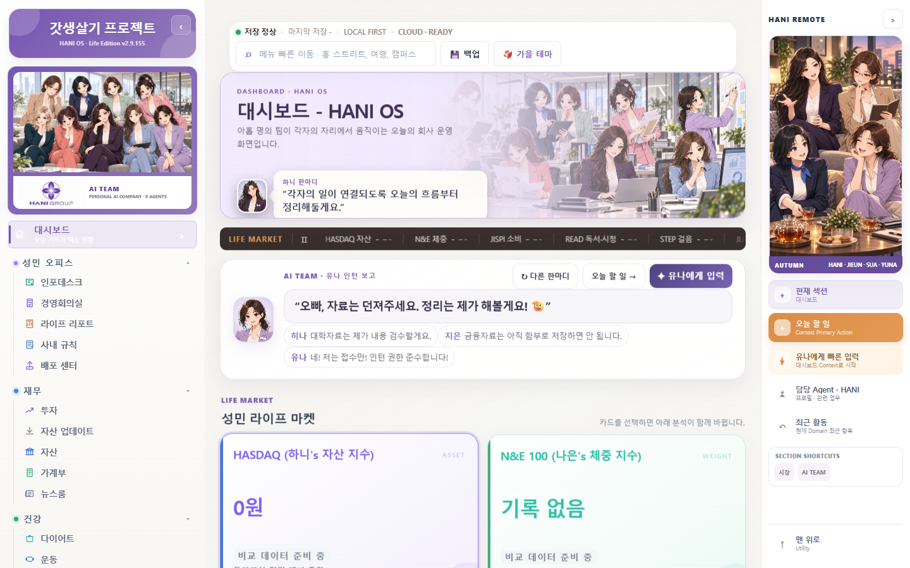
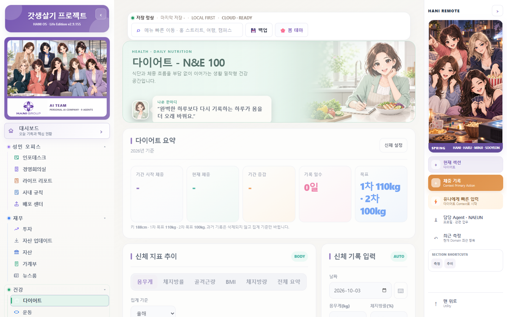

HANI · Seasonal Architecture · v2.9.155
정적 QA Preview · 1440 / 390px. 계절 변경과 구조 표면 분리. 기존 Hero·Remote 이미지 선택 유지. 외부 연결 차단·빈 데이터의 격리 테스트 화면입니다. 미병합·미배포.
Desktop Home · Autumn

Desktop Diet · Spring

Mobile Home · Winter / Remote · Summer
Finance 텍스트색은 기존 계절 상속을 제거하고 고유 보라색으로 고정했습니다. 다른 Domain 배경·테두리와 상승·하락 색은 기준선과 비교했습니다. 향후 Galaxy 전체 호환성은 별도 검증이 필요합니다.